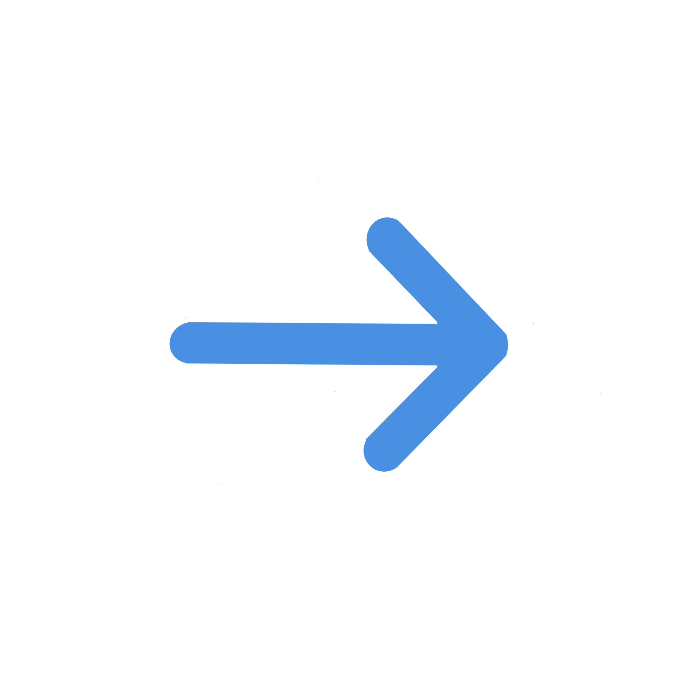

[LOG 11 // USER: FLYINGDUTCHMAN // 08/4/2025--4:23AM]
>i dont think im supposed to be the person everyone depends on
>like
>everyone depends on me to turn back things when things get bad
>and its really scary
>i dont think i was /built/ to be a person that people depend on
>and it scares me because this fucking place decided i am that person
>because i cant just not
>but its so much pressure
>everytime something bad happens i get so scared that i wont be able to fix it
>its suffocating
>i havent cried in front of the others since we got here
>but kenny messaged me while i cried my eyes out for hours the other night
>i couldnt even get words out
>it was really embarrassing
>he doesnt judge me though
>the others dont
>they would never
>but i think this like
>im supposed to be the leader because im supposed to be the one that fixes everything
>and it makes it hard to be vulnerable
>i hate it
>i dont want to be a leader
>i dont want to be strong
>i want to be me
>kenny lets me be me
>and he lets me say ugly things i dont mean and he helps me organize my thoughts
>theres a lot of stuff ill do differently when i go back
>i dont have to write it down to remember it
>i know i know i know
>im really tired
>im still trying my best